Scroll Down to Learn More
Timeline:
2013
Sneaky's career begins all the way back to the third season of professional League of Legends play. The LCS, or League of Legends
Championship run by the creators of the game itself, Riot Games, had just been founded and a rising star had been
found going by the name Quantic Gaming Sneaky.
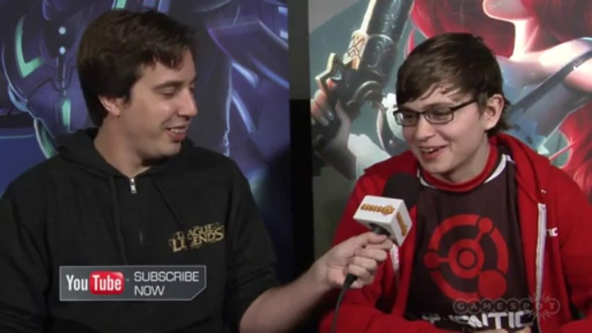
Quantic Gaming qualified to play in the 2013 LCS Summer Split by defeating Team ComPlexity 3-0. The team was later rebranded to Cloud9 and went on to make
one of the most legendary runs of the regular season. After going 25-3 in the regular season, Sneaky, along his other former Quantic Gaming teammates,
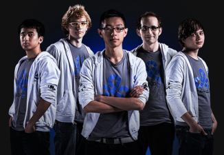
went on to the finals and defeated Team SoloMid 3-0 in a crushing victory to gain the title of NALCS Champions in their 1st season of professional play.
Going on to the Season 3 League of Legends World Championships, C9 was given a bye to the quarterfinal round, where they faced a powerful Fnatic team
and lost 2-1 in a very close match.
To The Top
2014
Refreshed and ready for a new season, the Cloud 9 returned to the 2014 NA LCS Spring Split with the same roster. Once again, they
dominated the regular season, having a 24-4 record and met Team SoloMid for the 2nd time in the finals. Following the momentum of their previous finals victory,
they defeated their opponents in another 3-0 fashion.
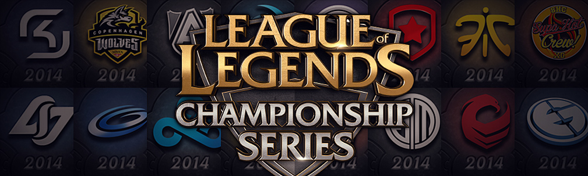
Coming back for the 2014 NA LCS Summer Split, Cloud9 finished the regular season with less than average 18-10 record, still placing 1st in the league.
The team advanced to the finals for the 3rd time in a row to face the returning Team SoloMid. This time however, Sneaky and Cloud9 were unsuccessful in securing
the championship title in a close 3-2 loss.
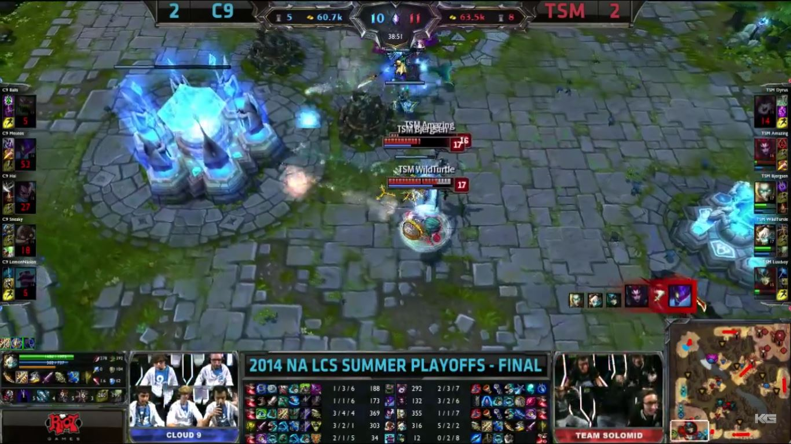
After qualifying for the Season 4 World Championship, Sneaky and the team went on a tour around various South-East and South Asian locations. Their group stage was
in Singapore, where they competed against Team Alliance from Europe, NaJin White Shield from Korea, and KaBuM! e-Sports from Brazil.
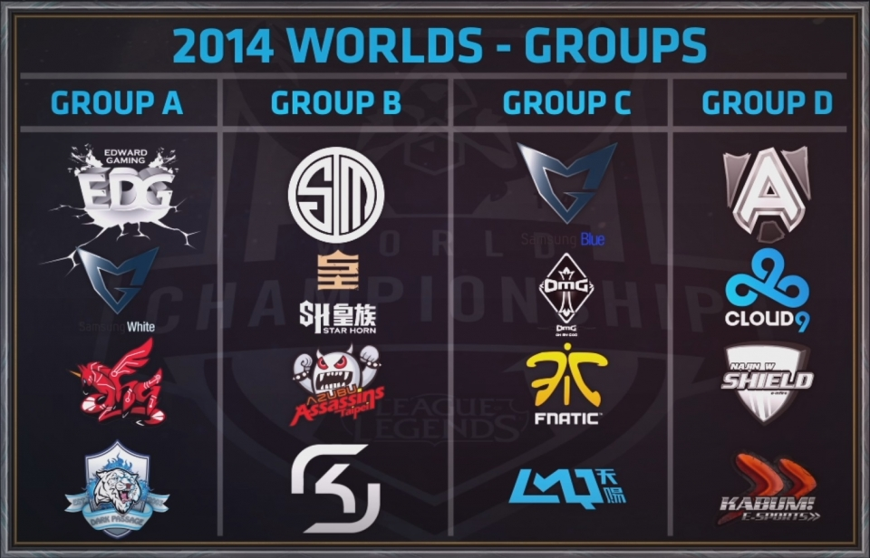
Going 4-2 in the group stage, Cloud 9 moved on to the quarter-finals in South Korea. There, they faced Korean team and soon to be World Champions, Samsung
Galaxy White and sadly lost 3-1.
To The Top
2015
Following a shaky 13-6 group stage record in the 2015 NA LCS Spring Split, the team advanced to the finals to meet Team SoloMid for a 4th time but lost
again 3-1.
The next split, Cloud 9 made their first roster change. Mid-laner Hai was to be substituted by European talent Incarnati0n.
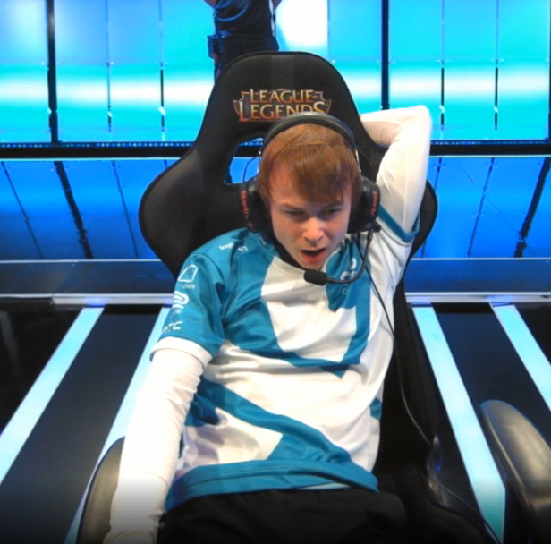
Incarnati0n had a shaky start, as the team had a 7th place finish, barely avoiding relegations. Worlds was approaching and the only way Cloud 9 could
qualify for the event in Europe was through the North American Regional Qualifier. With the points that Cloud 9 recieved last Split for their 2nd place finish,
they were placed in the bracket for the opportunity to be North America's final seed.
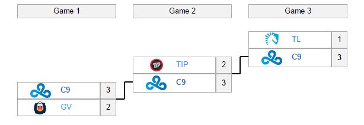
In preparation for the braket, Cloud 9 brought back former C9 mid-laner and shot-caller Hai to play in the jungle and replace Meteos. The following
bracket run was miraculous. The team reverse sweeped not once, but twice aginst Teams Gravity and Impulse to earn a spot at the 2015 World Championship.
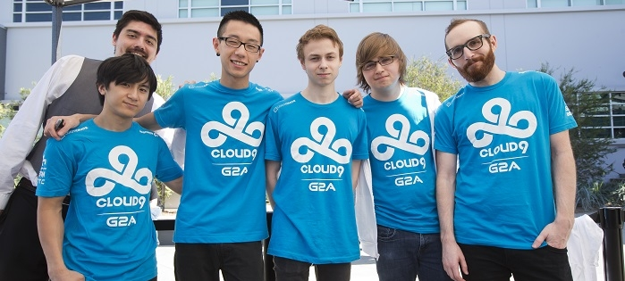
At Paris, the location for the group stage, Cloud 9 once again faced European team Fnatic, Taiwanese team ahq e-Sports Club and Chinese team
Invictus Gaming.
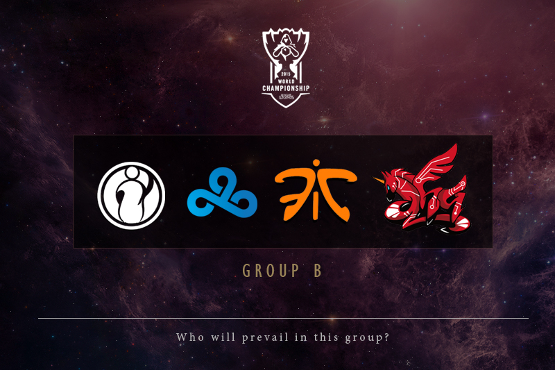
Sadly, after a convincing 3-0 start in the first week of group stage play, Cloud 9 went 0-4 in the second week and were eliminated from the tournament.
To The Top
2016
During the off-season, Cloud 9 aquired some quality roster upgrades going by the names of Rush, to replace Hai in the jungle, and
Bunny FuFuu, to share time with Hai in the support role. LemonNation, the original C9 support, was moved to a management position.

The team was led to a 12-6 finish in 3rd place but only to be defeated in the quarter-final round in the play-offs for the 2016 NA LCS Spring Split.
Deciding to change their roster once more for the 2016 NA LCS Summer Split, Cloud 9 picked up Korean talent, Impact, to play in the top lane, replacing
Balls
in the top lane, bringing back Meteos in the jungle to replace Rush and aquiring Canadian support player Smoothie. The decision was well-made, placing the
team in the finals for a 5th time, although losing 3-1.
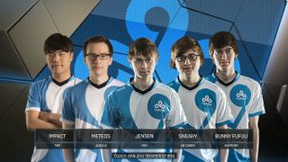
Cloud 9 once again made it through the Regional Qualifier Gauntlet to make it for a 4th time to the 2016 World Championship, this time in America.
After placing 2nd in the group stage, alongside two-time World Champion Korean team, SK Telecom T1, Taiwanese team Flash Wolves, and Chinese team IMay, Cloud 9
became the only North American team to advance to the quarter-finals.
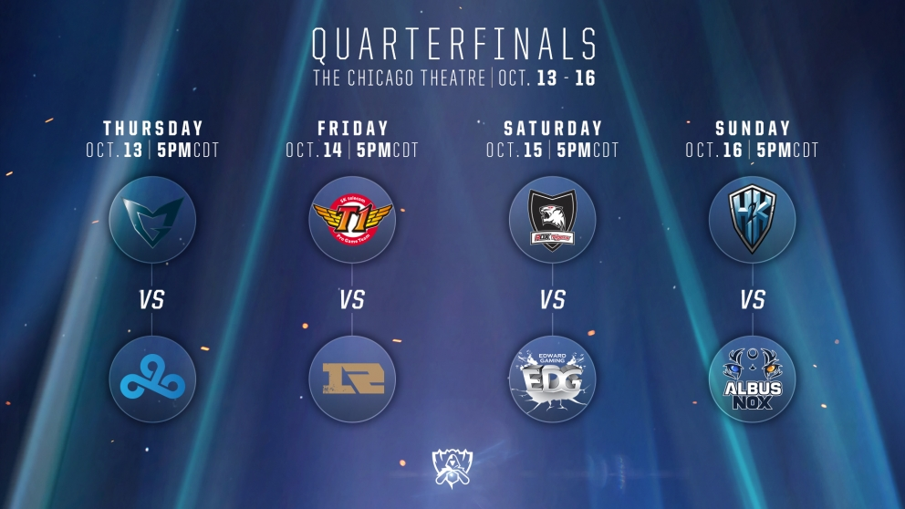
Expectations were high for Sneaky and the Cloud 9 squad, expectations that they, unluckily, failed to meet. They lost to the Korean finalist team 3-0.
To The Top
2017
Another roster swap was made over the 2017 off-season. Contractz, the former jungler for Cloud 9's challenger team, was put on the starting roster
to fill in Meteos's role. The original jungler for Cloud 9 made a sad departure to Pheonix1, becoming a threat to his former team in their 14-4 2017 NA LCS Spring Split
run.
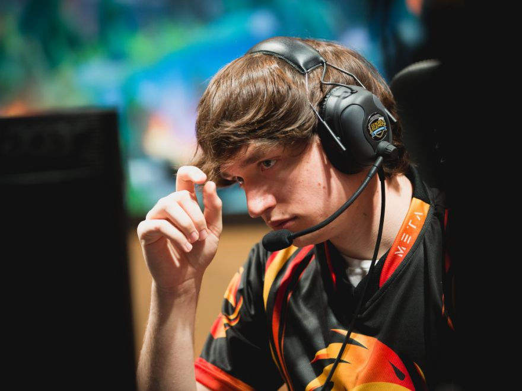
Currently, in the 2017 NA LCS Spring Split, the team is in the semi-finals after achieving 2nd place in the regular season. The team still has a lot of room for
growth, and their results for the rest of the year will be there to show.
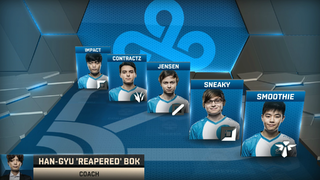
To The Top
{kind=link}